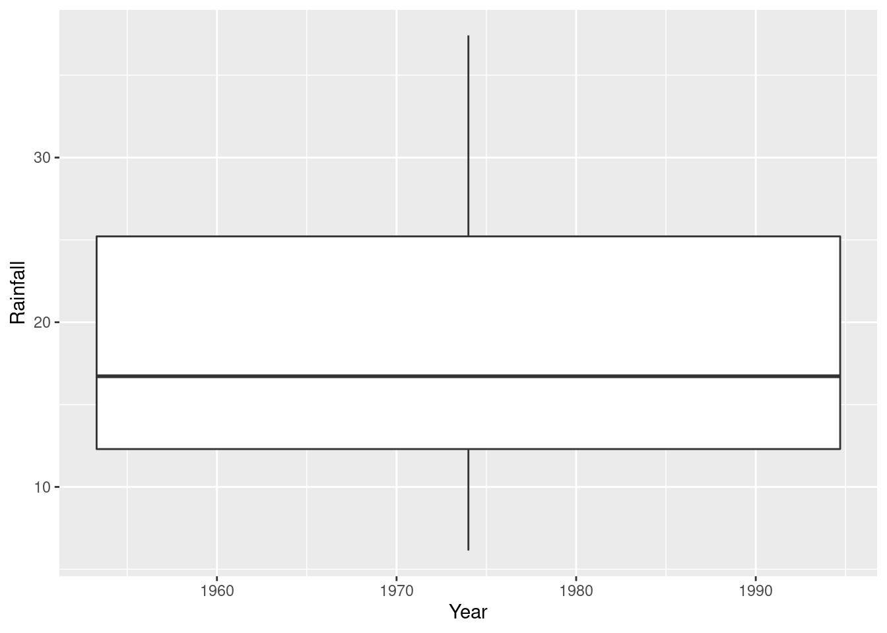
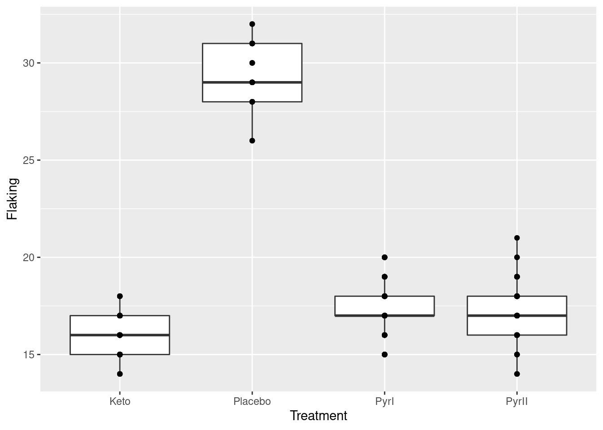

Chapter 9 The sign test
9.1 Running a maze
A researcher is trying to design a maze that can be run by rats in about 60 seconds. One particular maze was run by a sample of 21 rats, with the times shown in link.
Read the data into R. What (if anything) are the data values delimited by?
Run a sign test, doing it yourself as we did in class: count the number of values above and below 60, take the smaller of those, and find the probability of a value of that or smaller still on a binomial distribution with \(n=21\) and \(p=0.5\) (we have 21 data points), doubling the answer because the test is two-sided.
Install my package
smmr, if you haven’t already. To do this, you first need to install the packagedevtools(if you haven’t already), by going to the console and typing
When that’s all done, install smmr thus:
That all needs to be done only once. Then, each R Studio session where
you want to use smmr needs this:
As usual, only the library thing only needs to be done every
time.
When you have smmr installed, use sign_test from
that package to re-run your sign test. Do you get the same P-value?
Package
smmralso has a functionpval_sign, which has the same input assign_test, but with the null median first. Run it on your data and see what it gives.Obtain a 95% confidence interval for the median based on these data. Do this two ways. First, use the trial and error way from class (either the try-lots-of-values way or the bisection way; either is good). Second, use
ci_medianfromsmmr. The latter takes as input a data frame, a column name (unquoted) and optionally aconf.levelthat defaults to 0.95.
9.2 Chocolate chips
A famous cookie manufacturer claims that their bags of chocolate chip cookies contain “more than 1100 chocolate chips on average”. A diligent group of students buys 16 bags of these cookies and counts the number of chocolate chips in each bag. The results are in http://ritsokiguess.site/datafiles/chips.txt.
Read in and display (some of) the data.
Build your own sign test in R for testing that the median is 1100 chocolate chips, against the alternative that it is greater. (Do this as in class: count the appropriate thing, compare it with an appropriate binomial distribution, and obtain a P-value.
Use my R package
smmrto reproduce your sign test above, and verify that you get consistent results. (See the maze-design question for instructions on installing this, if you haven’t yet.)Use
smmrto obtain a 95% confidence interval for the median number of chocolate chips per bag of cookies.
9.3 The power of the sign test
I’ve mentioned several times that the sign test has less power than the \(t\)-test. Let’s investigate this with a specific example.
Let’s suppose we are testing \(H_0: \mu=40\) against \(H_a: \mu \ne 40\), where \(\mu\) is the population mean (and median, as we shall see). Our population actually has a normal distribution with mean 50 and SD 15, so that the null hypothesis is wrong and we want to reject it most of the time. On the other hand, the population actually is normally-distributed and so the \(t\)-test is the right one to use.
(This is an old question, so I tackle the simulated power differently than I did it in class this time. But see if you can follow what I do here.)
Use
power.t.testto find the probability that a \(t\)-test correctly rejects the null hypothesis using a sample size of \(n=10\).What code in R would draw a random sample of size 10 from the true population distribution and save the sample in a variable?
What code would count how many of the sampled values are less than 40 and how many are greater (or equal)?
It turns out the sign test would reject \(H_0: M=40\) against \(H_a: M \ne 40\) at \(\alpha=0.05\) if the smaller of the numbers in the last part is 1 or less. (\(M\) is the population median.) Add to your pipeline to obtain
TRUEif you should reject the null for your data andFALSEotherwise.Simulate the above process 1000 times: draw a random sample from a normal distribution of size 10 with mean 50 and SD 15, count the number of values below 40, reject if the minimum of those is 0, 1, 9, or 10, then count the number of rejections out of 1000.
Which is more powerful in this case, the sign test or the \(t\)-test? How do you know?
9.4 Ben Roethlisberger
Ben Roethlisberger plays (American) football for the Pittsburgh Steelers. He plays as a quarterback, which means that his job is to throw (pass) the ball so that one of his teammates can catch it. Each time he makes a pass that is caught, this is called a “completion”, and the team coaches are interested in his average number of completions per game (this average could be the mean or the median).
In 2010, Roethlisberger was suspended for the first four games of the season, and there was concern that this might affect his performance (in terms of the number of passes completed in the games after he returned). The Pittsburgh Steelers did not play in week 5 of the 2010 season; the season is 17 weeks long (one game per week) and each team has one week in which they do not play.
The data are here. There are four columns: the year (always 2010), the week number of the season that the game was played in, the name of the opposing team, and the number of completed passes by Roethlisberger in the game.
Read in and display (some of) the data. Do you have what you were expecting?
Make a suitable graph of the number of completed passes, and explain briefly why you would have some doubts about using \(t\)-procedures in this situation.
Run a sign test to compare Roethlisberger’s performance in 2010 with his previous average of 22.5 completions per game. What do you conclude?
Why might you have expected your sign test to come out significant, even without looking at the P-value? Explain briefly.
Obtain a 90% confidence interval for the median number of completed passes (over “all possible games played by 2010 Ben Roethlisberger”).
Find a 90% confidence interval for the mean number of passes completed, and explain briefly why it differs from the one for the median in the way that it does.
9.5 Six ounces of protein
A company produces prepackaged diet meals. These meals are advertised as containing “6 ounces of protein per package”. A consumer organization is concerned that this is not accurate. The organization takes a random sample of 20 of these meals, and measures the protein content of each one. The data are in as one column.
Read in and display (some of) the data.
Make a suitable graph of your data.
Why might a sign test be better than a \(t\)-test for assessing the average amount of protein per package? Explain briefly. (“Average” here means any measure of centre.)
Run a suitable sign test for these data. What do you conclude?
In your sign test, how could you have deduced that the P-value was going to be small even without looking at any of the P-values themselves? Explain briefly.
Obtain a 90% confidence interval for the population median protein content. What does this tell you about the reason for the rejection or non-rejection of the null hypothesis above?
My solutions follow:
9.6 Running a maze
A researcher is trying to design a maze that can be run by rats in about 60 seconds. One particular maze was run by a sample of 21 rats, with the times shown in link.
- Read the data into R. What (if anything) are the data values delimited by?
Solution
Take a look at the data file first. There is only one column of
data, so you can treat it as being delimited by anything you like:
a space, or a comma (the file can also be treated as a
.csv), etc.:
##
## ── Column specification ────────────────────────────────────────────────────────────────────────────────────────────
## cols(
## time = col_double()
## )\(\blacksquare\)
- Run a sign test, doing it yourself as we did in class: count the number of values above and below 60, take the smaller of those, and find the probability of a value of that or smaller still on a binomial distribution with \(n=21\) and \(p=0.5\) (we have 21 data points), doubling the answer because the test is two-sided.
Solution
Count how many values are above and below 60:
5 above and 16 below. Then find out how likely it is that a binomial with \(n=21, p=0.5\) would produce 5 or fewer successes:
## [1] 0.01330185or if you prefer count upwards from 16:
## [1] 0.01330185and double it to get a two-sided P-value:
## [1] 0.0266037We’ll compare this with smmr in a moment.
\(\blacksquare\)
- Install my package
smmr, if you haven’t already. To do this, you first need to install the packagedevtools(if you haven’t already), by going to the console and typing
When that’s all done, install smmr thus:
That all needs to be done only once. Then, each R Studio session where
you want to use smmr needs this:
As usual, only the library thing only needs to be done every
time.
When you have smmr installed, use sign_test from
that package to re-run your sign test. Do you get the same P-value?
Solution
The sign test function takes a data frame, an (unquoted) column name from that data frame of data to test the median of, and a null median (which defaults to 0 if you omit it):
## $above_below
## below above
## 16 5
##
## $p_values
## alternative p_value
## 1 lower 0.01330185
## 2 upper 0.99640131
## 3 two-sided 0.02660370This shows you two things: a count of the values below and above the null median, and then the P-values according to the various alternative hypotheses you might have.
In our case, we see again the 16 maze-running times below 60 seconds and 5 above (one of which was a long way above, but we don’t care about that here). We were testing whether the median was different from 60, so we look at the two-sided P-value of 0.0266, which is exactly what we had before.
If sign_test doesn’t work for you (perhaps because it needs
a function enquo that you don’t have), there is an
alternative function sign_test0 that doesn’t use it. It
requires as input a column of values (extracted from the data
frame) and a null median, thus:
## $above_below
## below above
## 16 5
##
## $p_values
## alternative p_value
## 1 lower 0.01330185
## 2 upper 0.99640131
## 3 two-sided 0.02660370The output should be, and here is, identical.
\(\blacksquare\)
- Package
smmralso has a functionpval_sign, which has the same input assign_test, but with the null median first. Run it on your data and see what it gives.
Solution
Try it and see:
## [1] 0.0266037The two-sided P-value, and that is all. We’ll be using this in a minute.
Alternatively, there is also this, which needs a null median and a column as input:
## [1] 0.0266037\(\blacksquare\)
- Obtain a 95% confidence interval for the median based on these
data. Do this two ways. First, use the trial and error way from class
(either the try-lots-of-values way or the bisection way; either is good).
Second, use
ci_medianfromsmmr. The latter takes as input a data frame, a column name (unquoted) and optionally aconf.levelthat defaults to 0.95.
Solution
The reason for showing you pval_sign in the previous
part is that this is a building block for the confidence interval.
What we do is to try various null medians
and find out which ones give P-values less than 0.05 (outside the
interval) and which ones bigger (inside).
We know that the value 60 is
outside the 95% CI, and the sample median is close to 50 (which we
expect to be inside), so sensible values to try for the upper end of
the interval would be between 50 and 60:
## [1] 0.0266037## [1] 0.6636238So, 55 is inside the interval and 58 is outside. I could investigate
further in similar fashion, but I thought I would try a whole bunch of null
medians all at once. That goes like this, rowwise because pval_sign expects one null-hypothesis median, not several all at once:
So values for the median all the way up to and including 57.5 are in the confidence interval.
Now for the other end of the interval. I’m going to do this a different way: more efficient, but less transparent. The first thing I need is a pair of values for the median: one inside the interval and one outside. Let’s try 40 and 50:
## [1] 0.00719738## [1] 1OK, so 40 is outside and 50 is inside. So what do I guess for the next value to try? I could do something clever like assuming that the relationship between hypothesized median and P-value is linear, and then guessing where that line crosses 0.05. But I’m going to assume nothing about the relationship except that it goes uphill, and therefore crosses 0.05 somewhere. So my next guess is halfway between the two values I tried before:
## [1] 0.07835388So, 45 is inside the interval, and my (slightly) improved guess at the bottom end of the interval is that it’s between 40 and 45. So next, I try halfway between those:
## [1] 0.026603742.5 is outside, so the bottom end of the interval is between 42.5 and 45.
What we are doing is narrowing down where the interval’s bottom end is. We started by knowing it to within 10, and now we know it to within 2.5. So if we keep going, we’ll know it as accurately as we wish.
This is called a “bisection” method, because at each step, we’re dividing our interval by 2.
There is one piece of decision-making at each step: if the P-value for the median you try is greater than 0.05, that becomes the top end of your interval (as when we tried 45); if it is less, it becomes the bottom end (when we tried 42.5).
This all begs to be automated into a loop. It’s not a
for-type loop, because we don’t know how many times we’ll be
going around. It’s a while loop: keep going while something
is true. Here’s how it goes:
lo <- 40
hi <- 50
while (abs(hi - lo) > 0.1) {
try <- (hi + lo) / 2
ptry <- pval_sign(try, times, time)
print(c(try, ptry))
if (ptry < 0.05) {
lo <- try
} else {
hi <- try
}
}## [1] 45.00000000 0.07835388
## [1] 42.5000000 0.0266037
## [1] 43.7500000 0.0266037
## [1] 44.37500000 0.07835388
## [1] 44.0625000 0.0266037
## [1] 44.2187500 0.0266037
## [1] 44.2968750 0.0266037## [1] 44.29688## [1] 0.0266037## [1] 44.375## [1] 0.07835388The loop stopped because 44.297 and 44.375 are less than 0.1
apart. The first of those is outside the interval and the second is
inside. So the bottom end of our interval is 44.375, to this
accuracy. If you want it more accurately, change 0.1 in the
while line to something smaller (but then you’ll be waiting
longer for the answer).
I put the print statement in the loop so that you could see
what values were being tried, and what P-values they were
producing. What happens with these is that the P-value jumps at each
data value, so you won’t get a P-value exactly 0.05; you’ll get one
above and one below.
Likewise, you can use the function with a zero on its name and feed it a column rather than a data frame and a column name:
tibble(meds = seq(55, 58, 0.25)) %>%
rowwise() %>%
mutate(pvals = with(times, pval_sign0(meds, time)))Or adapt the idea I had above for bisection.
All that was a lot of work, but I wanted you to see it all once, so that you
know where the confidence interval is coming from. smmr also
has a function ci_median that does all of the above without
you having to do it. As I first wrote it, it was using the trial and
error thing with rowwise, but I chose to rewrite it with the
bisection idea, because I thought that would be more accurate.
## [1] 44.30747 57.59766This is a more accurate interval than we got above. (The
while loop for the bisection keeps going until the two
guesses at the appropriate end of the interval are less than 0.01
apart, by default.)1 You can change this by adding something like tol=1e-4 to the end of your ci-median.
If you want some other confidence level, you add conf.level
on the end, as you would for t.test:
## [1] 46.20444 55.49473A 75% CI, just for fun. This is a shorter interval than the 95% one, as it should be.
Likewise there is a ci_median0 that takes a column and an
optional confidence level:
## [1] 44.30747 57.59766## [1] 46.20444 55.49473with the same results. Try ci_median first, and if it
doesn’t work, try ci_median0.
\(\blacksquare\)
9.7 Chocolate chips
A famous cookie manufacturer claims that their bags of chocolate chip cookies contain “more than 1100 chocolate chips on average”. A diligent group of students buys 16 bags of these cookies and counts the number of chocolate chips in each bag. The results are in http://ritsokiguess.site/datafiles/chips.txt.
- Read in and display (some of) the data.
Solution
I’ll pretend it’s a
.csv this time, just for fun. Give the data frame a
name different from chips, so that you don’t get
confused:
##
## ── Column specification ────────────────────────────────────────────────────────────────────────────────────────────
## cols(
## chips = col_double()
## )That looks sensible.
\(\blacksquare\)
- Build your own sign test in R for testing that the median is 1100 chocolate chips, against the alternative that it is greater. (Do this as in class: count the appropriate thing, compare it with an appropriate binomial distribution, and obtain a P-value.
Solution
The null median is 1100, so we count the number of values above and below:
The un-standard thing there is that we can put a logical condition
directly into the count. If you don’t think of that, you can
also do this, which creates a new variable less that is
TRUE or FALSE for each bag appropriately:
or the more verbose
Just one value below, with all the rest above. Getting the right P-value, properly, requires some careful thought (but you will probably get the right answer anyway). If the alternative hypothesis is true, and the median is actually bigger than 1100 (say, 1200), you would expect half the data values to be bigger than 1200 and half smaller. So more than half the data values would be bigger than 1100, and fewer than half of them would be less than 1100. So, if we are going to reject the null (as it looks as if we will), that small number of values below 1100 is what we want.
The P-value is the probability of a value 1 or less in a binomial distribution with \(n=16, p=0.5\):
## [1] 0.0002593994Or, equivalently, count up from 15:
## [1] 0.0002593994This is correctly one-sided, so we don’t have to do anything with it.
\(\blacksquare\)
- Use my R package
smmrto reproduce your sign test above, and verify that you get consistent results. (See the maze-design question for instructions on installing this, if you haven’t yet.)
Solution
This will mean reading the output carefully:
## $above_below
## below above
## 1 15
##
## $p_values
## alternative p_value
## 1 lower 0.9999847412
## 2 upper 0.0002593994
## 3 two-sided 0.0005187988This time, we’re doing a one-sided test, specifically an
upper-tail test, since we are looking for evidence that the
median is greater than 1100. The results are exactly what we
got “by hand”: 15 values above and one below, and a P-value (look
along the upper line) of 0.00026.
The two-sided P-value of 0.00052 rounds to the same 0.0005 as SAS got.
Alternatively, you can do this:
## $above_below
## below above
## 1 15
##
## $p_values
## alternative p_value
## 1 lower 0.9999847412
## 2 upper 0.0002593994
## 3 two-sided 0.0005187988with the same result (but only go this way if you need to).
\(\blacksquare\)
- Use
smmrto obtain a 95% confidence interval for the median number of chocolate chips per bag of cookies.
Solution
Once everything is in place, this is simplicity itself:
## [1] 1135.003 1324.9961135 to 1325. I would round these off to whole numbers, since the data values are all whole numbers. These values are all above 1100, which supports the conclusion we got above that the median is above 1100. This is as it should be, because the CI is “all those medians that would not be rejected by the sign test”.
Or,
## [1] 1135.003 1324.996\(\blacksquare\)
9.8 The power of the sign test
I’ve mentioned several times that the sign test has less power than the \(t\)-test. Let’s investigate this with a specific example.
Let’s suppose we are testing \(H_0: \mu=40\) against \(H_a: \mu \ne 40\), where \(\mu\) is the population mean (and median, as we shall see). Our population actually has a normal distribution with mean 50 and SD 15, so that the null hypothesis is wrong and we want to reject it most of the time. On the other hand, the population actually is normally-distributed and so the \(t\)-test is the right one to use.
(This is an old question, so I tackle the simulated power differently than I did it in class this time. But see if you can follow what I do here.)
- Use
power.t.testto find the probability that a \(t\)-test correctly rejects the null hypothesis using a sample size of \(n=10\).
Solution
##
## One-sample t test power calculation
##
## n = 10
## delta = 10
## sd = 15
## sig.level = 0.05
## power = 0.4691805
## alternative = two.sidedThe power is 0.469. Not great, but we’ll see how this stacks up against the sign test.
\(\blacksquare\)
- What code in R would draw a random sample of size 10 from the true population distribution and save the sample in a variable?
Solution
The data actually have a normal distribution with mean 50 and
SD 15, so we use rnorm with this mean and SD, obtaining
10 values:
## [1] 15.32396 61.02137 58.60862 43.80716 51.47327 50.20041 40.58185 59.60297 24.13182 29.52455\(\blacksquare\)
- What code would count how many of the sampled values are less than 40 and how many are greater (or equal)?
Solution
The way we know this is to put x into a data frame first:
2 values less (and 8 greater-or-equal).
\(\blacksquare\)
- It turns out the sign test would reject \(H_0: M=40\) against
\(H_a: M \ne 40\) at \(\alpha=0.05\) if the smaller of the numbers in the
last part is 1 or less. (\(M\) is the population median.)
Add to your pipeline to obtain
TRUEif you should reject the null for your data andFALSEotherwise.
Solution
This is actually easier than you might think. The output from
count is a data frame with a column called n,
whose minimum value you want. I add to my pipeline:
This will fail sometimes. If all 10 of your sample values are greater
than 40, which they might turn out to be, you’ll get a table with only
one line, FALSE and 10; the minimum of the n values
is 10 (since there is only one), and it will falsely say that you
should not reject. The fix is
tibble(x) %>% count(x<40) %>%
summarize(the_min=min(n)) %>%
mutate(is_rejected=(the_min<=1 | the_min==10))The above is almost the right thing, but not quite: we only want that value
that I called is_rejected, rather than the whole data frame,
so a pull will grab it:
tibble(x) %>% count(x<40) %>%
summarize(the_min=min(n)) %>%
mutate(is_rejected=(the_min<=1 | the_min==10)) %>%
pull(is_rejected)## [1] FALSEYou might be wondering where the “1 or less” came from. Getting a P-value for the sign test involves the binomial distribution: if the null is correct, each data value is independently either above or below 40, with probability 0.5 of each, so the number of values below 40 (say) is binomial with \(n=10\) and \(p=0.5\). The P-value for 1 observed value below 40 and the rest above is
## [1] 0.02148438which is less than 0.05; the P-value for 2 values below 40 and the rest above is
## [1] 0.109375which is bigger than 0.05.
You might have encountered the term “critical region” for a test. This is the values of your test statistic that you would reject the null hypothesis for. In this case, the critical region is 1 and 0 observations below 40, along with 1 and 0 observations above 40.
When you’re thinking about power, I think it’s easiest to think in terms of the critical region (rather than directly in terms of P-values) since you have a certain \(\alpha\) in mind all the way through, 0.05 in the power examples that I’ve done. The steps are then:
Work out the critical region for your test, the values of the test statistic (or sample mean or sample count) that would lead to rejecting the null hypothesis.
Under your particular alternative hypothesis, find the probability of falling into your critical region.
When I say “work out”, I mean either calculating (along the lines of STAB57), or simulating, as we have done here.
\(\blacksquare\)
- Simulate the above process 1000 times: draw a random sample from a normal distribution of size 10 with mean 50 and SD 15, count the number of values below 40, reject if the minimum of those is 0, 1, 9, or 10, then count the number of rejections out of 1000.
Solution
Set up a dataframe with a column (called, maybe, sim) that counts the number of simulations you are doing, and then use rowwise to take a random sample in each row and extract what you need from it.
I start with setting the random number seed, so it comes out the same each time. That way, if I rerun the code, my answers are the same (and I don’t have to change my discussion of them.)
Each sample has 10 values in it, not just one, so you need the list around the rnorm. Note that sample is labelled as a list-column.
Now we have to count how many of the sample values are less than 40:
set.seed(457299)
tibble(sim = 1:1000) %>%
rowwise() %>%
mutate(sample = list(rnorm(10, 50, 15))) %>%
mutate(less = list(sample<40)) %>%
mutate(counted = sum(less)) This is a bit of a programmer’s trick. In R, less contains a vector of 10 TRUE or FALSE values, according to whether the corresponding value in sample is less than 40 or not. In R (and many other programming languages), the numeric value of TRUE is 1 and of FALSE is 0, so you count how many TRUE values there are by adding them up. To verify that this worked, we should unnest sample and less:
set.seed(457299)
tibble(sim = 1:1000) %>%
rowwise() %>%
mutate(sample = list(rnorm(10, 50, 15))) %>%
mutate(less = list(sample<40)) %>%
mutate(counted = sum(less)) %>%
unnest(c(sample, less))In the first sample, 38.8, 39.5, and 33.8 are less than 40, correctly identified so in less, and the counted column shows that the first sample did indeed have 3 values less than 40. You can check a few of the others as well, enough to convince yourself that this is working.
Next, the sign test will reject if there are 0, 1, 9 or 10 values less than 40 (you might be guessing that the last two will be pretty unlikely), so make a column called reject that encapsulates that, and then count how many times you rejected in your simulations. I don’t need my unnest any more; that was just to check that everything was working so far:
set.seed(457299)
tibble(sim = 1:1000) %>%
rowwise() %>%
mutate(sample = list(rnorm(10, 50, 15))) %>%
mutate(less = list(sample<40)) %>%
mutate(counted = sum(less)) %>%
mutate(reject = (counted<=1 | counted >= 9)) %>%
count(reject)My simulated power is 0.243
This is all liable to go wrong the first few times, so make sure that
each line works before you go on to the next, as I did.
While you’re debugging, try it with a
small number of random samples like 5. (It is smart to have a variable called nsim which you set to a small number like 5 when you are testing, and than to 1000 when you run the real thing, so that the first line of the pipeline is then tibble(sim = 1:nsim).)
If you were handing something like this in, I would only want to see your code for the final pipeline that does everything, though you could and should have some words that describe what you did.
I’m now thinking a better way to do this is to write a function that takes a sample (in a vector) and returns a TRUE or FALSE according to whether or not a median of 40 would be rejected for that sample:
is_reject=function(x) {
tibble(x=x) %>%
mutate(counted = (x < 40)) %>%
summarize(below = sum(counted)) %>%
summarize(is_rejected = (below<=1 | below>=9)) %>%
pull(is_rejected)
}
is_reject(c(35, 45, 55))## [1] TRUE## [1] FALSENow, we have to use that:
set.seed(457299)
tibble(sim = 1:1000) %>%
rowwise() %>%
mutate(sample = list(rnorm(10, 50, 15))) %>%
mutate(reject = is_reject(sample)) %>%
count(reject)This is a bit cleaner because the process of deciding whether each sample leads to a rejection of the median being 40 has been “outsourced” to the function, and the pipeline with the rowwise is a lot cleaner: take a sample, decide whether that sample leads to rejection, and count up the rejections.
\(\blacksquare\)
- Which is more powerful in this case, the sign test or the \(t\)-test? How do you know?
Solution
The power of the sign test is estimated as 0.243, which is quite a bit less
than the power of the \(t\)-test, which we found back in (a) to be
0.469. So the \(t\)-test, in this situation where it is valid, is
the right test to use: it is (i) valid and (ii) more powerful.
So the \(t\)-test is more powerful. One way to think about how
much more powerful is to ask “how much smaller of a sample size would be needed for the \(t\)-test to have the same power as this sign test?”
The power of my sign test was 0.243, so in
power.t.test we set
power equal to that and
omit the sample size n:
##
## One-sample t test power calculation
##
## n = 5.599293
## delta = 10
## sd = 15
## sig.level = 0.05
## power = 0.243
## alternative = two.sidedA sample of size 6 gives the same power for the \(t\)-test that a
sample of size 10 does for the sign test. The ratio of these two
sample sizes is called the relative efficiency of the two
tests: in this case, the \(t\)-test is \(10/6=1.67\) times more
efficient. The data that you have are being used “more efficiently”
by the \(t\)-test.
It is possible to derive2 Meaning, I forget how to do it. But it has something to do with looking at alternatives that are very close to the null.
the limiting relative efficiency of
the \(t\) test relative to the sign test when the data are actually
normal, as the sample size gets larger. This turns out not to
depend on how far wrong the null is (as long as it is the same for
both the \(t\)-test and the sign test). This “asymptotic relative efficiency” is \(\pi/2=1.57\).
Our relative efficiency for power
0.243, namely 1.67, was pretty close to this, even though our
sample sizes 10 and 6 are not especially close to infinity.
This says that, if your data are actually from a normal
distribution, you do a lot better to use the \(t\)-test than the
sign test, because the sign test is wasteful of data (it only uses
above/below rather than the actual values).
Extra: if your data are not from a normal distribution, then the
story can be very different.
Of course you knew I would investigate this. There is a
distribution called the “Laplace” or “double exponential”
distribution, that has very long tails.3 If you’ve ever run into the exponential distribution, you’ll recall that this is right skewed with a very long tail. The Laplace distribution looks like two of these glued back to back.
The distribution is not in
base R, but there is a package called smoothmest that
contains a function rdoublex to generate random values from
this distribution. So we’re going to do a simulation investigation
of the power of the sign test for Laplace data, by the same
simulation technique that we did above. Like the normal, the Laplace
distribution is symmetric, so its mean and median are the same
(which makes our life easier).4 This is about the only way in which the normal and Laplace distributions are alike.
Let’s test the hypothesis that the median is zero. We’ll suppose that
the true median is 0.5 (this is called mu in
rdoublex). The first problem we run into is that we can’t use
power.t.test because they assume normal data, which we are
far from having. So we have to do two simulations: one to simulate the
power of the \(t\) test, and one to simulate the power of the sign test.
To simulate the \(t\) test, we first have to generate some Laplace data with the true mean of 0.5. We’ll use a sample size of 50 throughout these simulations.
## [1] -0.33323285 0.70569291 -1.22513053 0.68517708 0.87221482 0.49250051 0.26700527 1.90236874 0.53288312
## [10] 1.37374732 0.72743434 0.46634071 0.43581431 -0.01545866 0.18594908 -0.40403202 -0.13540289 0.83862694
## [19] -0.23360644 -0.74050354 2.92089551 -2.72173880 0.51571185 1.23636045 0.82921382 1.72456334 0.07903058
## [28] 0.74789589 0.90487190 2.52310082 3.13629814 0.81851434 0.74615575 -0.26068744 2.70683355 1.46981530
## [37] 1.45646489 1.20232517 6.65249860 -0.51575026 -0.07606399 2.11338640 -1.20427995 1.70986104 -1.66466321
## [46] 0.55346854 0.33908531 0.72100677 0.92025176 0.98922656This seems to have some unusual values, far away from zero:

You see the long tails compared to the normal.
Now, we feed these values into t.test and see whether we
reject a null median of zero (at \(\alpha=0.05\)):
##
## One Sample t-test
##
## data: rl
## t = 3.72, df = 49, p-value = 0.0005131
## alternative hypothesis: true mean is not equal to 0
## 95 percent confidence interval:
## 0.3399906 1.1388911
## sample estimates:
## mean of x
## 0.7394408Or we can just pull out the P-value and even compare it to 0.05:
## [1] 0.0005130841## [1] TRUEThis one has a small P-value and so the null median of 0 should be (correctly) rejected.
We’ll use these ideas to simulate the power of the \(t\)-test for these data, testing a mean of 0. This uses the same ideas as for any power simulation; the difference here is the true distribution:
tibble(sim = 1:1000) %>%
rowwise() %>%
mutate(sample = list(rdoublex(50, mu = 0.5))) %>%
mutate(t_test = list(t.test(sample, mu = 0))) %>%
mutate(t_pval = t_test$p.value) %>%
count(t_pval <= 0.05)And now we simulate the sign test. Since what we want is a P-value
from a vector, the easiest way to do this is to use
pval_sign0 from smmr, which returns exactly the
two-sided P-value that we want, so that the procedure is a step simpler:
tibble(sim = 1:1000) %>%
rowwise() %>%
mutate(sample = list(rdoublex(50, mu = 0.5))) %>%
mutate(sign_pval = pval_sign0(0, sample)) %>%
count(sign_pval <= 0.05)For data from this Laplace distribution, the power of this \(t\)-test is 0.696, but the power of the sign test on the same data is 0.761, bigger. For Laplace-distributed data, the sign test is more powerful than the \(t\)-test.
This is not to say that you will ever run into data that comes from the Laplace distribution. But the moral of the story is that the sign test can be more powerful than the \(t\)-test, under the right circumstances (and the above simulation is the “proof” of that statement). So a blanket statement like “the sign test is not very powerful” needs to be qualified a bit: when your data come from a sufficiently long-tailed distribution, the sign test can be more powerful relative to the \(t\)-test than you would think.
\(\blacksquare\)
9.9 Ben Roethlisberger
Ben Roethlisberger plays (American) football for the Pittsburgh Steelers. He plays as a quarterback, which means that his job is to throw (pass) the ball so that one of his teammates can catch it. Each time he makes a pass that is caught, this is called a “completion”, and the team coaches are interested in his average number of completions per game (this average could be the mean or the median).
In 2010, Roethlisberger was suspended for the first four games of the season, and there was concern that this might affect his performance (in terms of the number of passes completed in the games after he returned). The Pittsburgh Steelers did not play in week 5 of the 2010 season; the season is 17 weeks long (one game per week) and each team has one week in which they do not play.
The data are here. There are four columns: the year (always 2010), the week number of the season that the game was played in, the name of the opposing team, and the number of completed passes by Roethlisberger in the game.
- Read in and display (some of) the data. Do you have what you were expecting?
Solution
Reading in is the usual, noting that this is a .csv:
##
## ── Column specification ────────────────────────────────────────────────────────────────────────────────────────────
## cols(
## season = col_double(),
## week = col_double(),
## opponent = col_character(),
## completed = col_double()
## )Since “Roethlisberger” is a lot to type every time, I called the dataframe by his first name.
I am showing all 12 rows here; you are probably seeing only 10, and will have to scroll down to see the last two.
I have the four variables promised, and I also have a sensible number of rows. In particular, there is no data for weeks 1–4 (the suspension) and for week 5 (in which the team did not play), but there is a number of passes completed for all the other weeks of the season up to week 17. (If Roethlisberger had not played in any other games, you can expect that I would have told you about it.)
Extra: I did some processing to get the data to this point. I wanted to ask you about the 2010 season, and that meant having the 2009 data to compare it with. So I went here, scrolled down to Schedule and Game Results, and clicked on each of the Boxscores to get the player stats by game. Then I made a note of the opponent and the number of passes completed, and did the same for 2010. I put them in a file I called r1.txt, in aligned columns, and read that in. (An alternative would have been to make a spreadsheet and save that as a .csv, but I already had R Studio open.) Thus:
##
## ── Column specification ────────────────────────────────────────────────────────────────────────────────────────────
## cols(
## season = col_double(),
## week = col_double(),
## opponent = col_character(),
## completed = col_double()
## )I was curious about the season medians (for reasons you see later), thus:
You will realize that my asserted average for “previous seasons” is close to the median for 2009. Here is where I have to admit that I cheated. It actually is the median for 2009, except that there are some games in 2010 where Roethlisberger had 22 completed passes and I didn’t want to mess the sign test up (I talk more about this later). So I made it 22.5, which is a possible value for the median of an even number of whole-number values.
Anyway, the last thing to do is to grab only the rows for 2010 and save them for you. This uses filter to select only the rows for which something is true:
\(\blacksquare\)
- Make a suitable graph of the number of completed passes, and explain briefly why you would have some doubts about using \(t\)-procedures in this situation.
Solution
Don’t be tempted to think too hard about the choice of graph (though I talk more about this below). One quantitative variable, so a histogram again. There are only 12 observations, so 5 bins is about as high as you should go:

This one shows an outlier: there is one number of completed passes that is noticeably higher than the rest. A normal distribution doesn’t have outliers, and so this, coupled with a small sample in which normality is important, means that we should not be using a \(t\)-test or confidence interval.
If you chose a different number of bins, you might get a different look. Here’s 4 bins:

That looks more like right-skewness, but the conclusion is the same.
Extra: if you have read, for example, Problem 6.1 in PASIAS, you’ll have seen that another possibility is a one-group boxplot. This might have been the context in which you first saw the boxplot, maybe at about the time you first saw the five-number summary, but I don’t talk about that so much in this course because ggplot boxplots have both an x and a y, and it makes more sense to think about using boxplots to compare groups. But, you can certainly get R to make you a one-sample boxplot. What you do is to set the grouping variable to a “dummy” thing like the number 1:
 and then you ignore the \(x\)-axis.
and then you ignore the \(x\)-axis.
This really shows off the outlier; it is actually much bigger than the other observations. It didn’t show up so much on the histograms because of where the bin boundaries happened to come. On the four-bin histogram, the highest value 30 was in the 27.5–32.5 bin, and the second-highest value 23 was at the bottom of the 22.5–27.5 bin. So the highest and second-highest values looked closer together than they actually were.
If you have been reading ahead, you might also be thinking about a normal quantile plot. That is for specifically assessing normality, and here this is something that interests us, because a \(t\)-test will be doubtful if the normality fails:
 This again shows off the outlier at the high end. It is a reasonable choice of plot here because normality is of specific interest to us.
This again shows off the outlier at the high end. It is a reasonable choice of plot here because normality is of specific interest to us.
A note: you are absolutely not required to read ahead to future lectures. Each assignment can be done using the material in the indicated lectures only. If you want to use something from future lectures, go ahead, but make sure you are using it appropriately.
Don’t be tempted to plot the number of completed passes against something like week number:
 That is quite interesting (a mostly increasing trend over weeks, with the outlier performance in week 10), but it doesn’t tell us what we want to know here: namely, is a \(t\)-test any good?
That is quite interesting (a mostly increasing trend over weeks, with the outlier performance in week 10), but it doesn’t tell us what we want to know here: namely, is a \(t\)-test any good?
\(\blacksquare\)
- Run a sign test to compare Roethlisberger’s performance in 2010 with his previous average of 22.5 completions per game. What do you conclude?
Solution
Use smmr, dataframe, column, null median:
## $above_below
## below above
## 10 2
##
## $p_values
## alternative p_value
## 1 lower 0.01928711
## 2 upper 0.99682617
## 3 two-sided 0.03857422I am looking for any change, so for me, a two-sided test is appropriate. If you think this is one-sided, make a case for your side, and then go ahead.
My P-value is 0.039, so I can reject the null hypothesis (that the median number of passes completed is 22.5) and conclude that it has changed in 2010.
(You might hypothesize that this is the result of a decrease in confidence, that he is either throwing fewer passes, or the ones that he is throwing are harder to catch. If you know about football, you might suspect that Roethlisberger was actually passing too much, including in situations where he should have handing off to the running back, instead of reading the game appropriately.)
Extra: I said above that I cheated and made the null median 22.5 instead of 22. What happens if we make the null median 22?
## $above_below
## below above
## 8 2
##
## $p_values
## alternative p_value
## 1 lower 0.0546875
## 2 upper 0.9892578
## 3 two-sided 0.1093750For one thing, the result is no longer significant. But looking at the table of values above and below reveals something odd: there are only ten values. What happened to the other two? What happened is that two of the data values were exactly equal to 22, so they are neither above nor below. In the sign test, they are thrown away, so that we are left with 8 values below 22 and 2 above.
I didn’t want to make you wonder what happened, so I made the null median 22.5.
\(\blacksquare\)
- Why might you have expected your sign test to come out significant, even without looking at the P-value? Explain briefly.
Solution
The other ingredient to the sign test is how many data values are above and below the null median. You can look at the output from sign_test (the first part), or count them yourself:
You can put a logical condition (something that can be true or false) into count, or you can create a new column using ifelse (which I think I showed you somewhere):
Whichever way you do it, there seem to be a lot more values below than above, very different from a 50–50 split. Even with only 12 observations, this turns out to be enough to be significant. (If you tossed a fair coin 12 times, would you be surprised to get only 2 heads or 2 tails?)
\(\blacksquare\)
- Obtain a 90% confidence interval for the median number of completed passes (over “all possible games played by 2010 Ben Roethlisberger”).
Solution
This is ci_median, but with conf.level since you are not using the default level of 95%:
## [1] 17.00244 21.9987817 to 22 completed passes.
Extra: the P-value of the sign test only changes (as the null median changes) when you get to a data point; otherwise, the number of values above and below will stay the same, and the P-value will stay the same. The data values here were all whole numbers, so the limits of the confidence interval are also whole numbers (to the accuracy of the bisection), so the interval really should be rounded off.
\(\blacksquare\)
- Find a 90% confidence interval for the mean number of passes completed, and explain briefly why it differs from the one for the median in the way that it does.
Solution
All right, get the interval for the mean first:
##
## One Sample t-test
##
## data: completed
## t = 17.033, df = 11, p-value = 2.971e-09
## alternative hypothesis: true mean is not equal to 0
## 90 percent confidence interval:
## 17.89124 22.10876
## sample estimates:
## mean of x
## 20The 95% confidence interval for the mean goes from 17.9 to 22.1 (completions per game).
This is higher at both ends than the interval for the median, though possibly not as much as I expected. This is because the mean is made higher by the outlier (compared to the median), and so the CI procedure comes to the conclusion that the mean is higher.
Extra: this is one of those cases where the bootstrap might shed some light on the sampling distribution of the sample mean:
tibble(sim = 1:1000) %>%
rowwise() %>%
mutate(my_sample = list(sample(ben$completed, replace = TRUE))) %>%
mutate(my_mean = mean(my_sample)) %>%
ggplot(aes(x = my_mean)) + geom_histogram(bins = 10)
This is noticeably skewed to the right (it goes further up from the peak than down), which is why the CI for the mean went up a bit higher than the one for the median.
Finally, bootstrapping the median is not something you’d want to do, since the sign test doesn’t depend on anything being normally-distributed. This is a good thing, since bootstrapping the sample median is weird:
tibble(sim = 1:1000) %>%
rowwise() %>%
mutate(my_sample = list(sample(ben$completed, replace = TRUE))) %>%
mutate(my_median = median(my_sample)) %>%
ggplot(aes(x = my_median)) + geom_histogram(bins = 30)
The “holes” in the distribution comes about because there are not all that many different possible sample medians when you sample with replacement. For one thing, the values are all whole numbers, so the median can only be something or something and a half. Even then, the bar heights look kind of irregular.
I used a large number of bins to emphasize this, but even a more reasonable number looks strange:
tibble(sim = 1:1000) %>%
rowwise() %>%
mutate(my_sample = list(sample(ben$completed, replace = TRUE))) %>%
mutate(my_median = median(my_sample)) %>%
ggplot(aes(x = my_median)) + geom_histogram(bins = 10)
A sample median of 19 or 20 is more likely than one of 19.5.
\(\blacksquare\)
9.10 Six ounces of protein
A company produces prepackaged diet meals. These meals are advertised as containing “6 ounces of protein per package”. A consumer organization is concerned that this is not accurate. The organization takes a random sample of 20 of these meals, and measures the protein content of each one. The data are in as one column.
- Read in and display (some of) the data.
Solution
The usual. This is one column only, so you can pretend the columns are separated by anything at all and it will still work:
##
## ── Column specification ────────────────────────────────────────────────────────────────────────────────────────────
## cols(
## protein = col_double()
## )Get it to work via one of the methods you’ve seen in this class (ie., not read.table); I don’t mind how you manage it.
\(\blacksquare\)
- Make a suitable graph of your data.
Solution
One quantitative variable, so a histogram with a sufficiently small number of bins:

\(\blacksquare\)
- Why might a sign test be better than a \(t\)-test for assessing the average amount of protein per package? Explain briefly. (“Average” here means any measure of centre.)
Solution
The shape of the above distribution is skewed to the left, and not symmetric like a normal distribution. (If you say “the histogram is not normal”, make sure you also say how you know.) This means that the median would be a better measure of “average” (that is, centre) than the mean is, because the mean would be pulled downwards by the long tail, and the median would not. To complete the story, the sign test is a test of the median, so the sign test would be better than the \(t\)-test, which is a test of the mean.
The other thing you might consider is the sample size, 20, which might be large enough to overcome this amount of skewness, but then again it might not be. So you could say that we should be cautious and run the sign test here instead.
\(\blacksquare\)
- Run a suitable sign test for these data. What do you conclude?
Solution
First, if you have not already done so, install smmr following the instructions in the lecture notes. (This one is not just install.packages.) Then, make sure you have a library(smmr) somewhere above where you are going to use something from it. Once that is in place, remember what we were interested in: was the median protein content 6 ounces, or is there evidence that it is something different? (The “not accurate” in the question says that the median could be higher or lower, either of which would be a problem, and so we need a two-sided alternative.) Thus, the null median is 6 and we need a two-sided test, which goes this way:
## $above_below
## below above
## 15 5
##
## $p_values
## alternative p_value
## 1 lower 0.02069473
## 2 upper 0.99409103
## 3 two-sided 0.04138947The P-value, 0.0414, is less than 0.05, so we reject the null hypothesis and conclude that the median is different from 6 ounces. The advertisement by the company is not accurate.
Make sure you give the actual P-value you are comparing with 0.05, since otherwise your answer is incomplete. That is, you need to say more than just “the P-value is less than 0.05”; there are three P-values here, and only one of them is the right one.
Extra: we already decided that a \(t\)-test is not the best here, but I am curious as to how different its P-value is:
##
## One Sample t-test
##
## data: protein
## t = -4.2312, df = 19, p-value = 0.000452
## alternative hypothesis: true mean is not equal to 6
## 95 percent confidence interval:
## 4.946263 5.643737
## sample estimates:
## mean of x
## 5.295The conclusion is the same, but the P-value is a lot smaller. I don’t think it should really be this small; this is probably because the mean is pulled down by the left skew and so really ought not to look so far below 6. I am inclined to think that if the \(t\)-test were correct, its P-value ought to be between this and the one from the sign test, because the \(t\)-test uses the actual data values, and the sign test uses the data less efficiently (only considering whether each one is above or below the null median).
\(\blacksquare\)
- In your sign test, how could you have deduced that the P-value was going to be small even without looking at any of the P-values themselves? Explain briefly.
Solution
Look at the other part of the output, the count of values above and below the null median. (You might have to click on “R Console” to see it.) If the null hypothesis was correct and the median was really 6, you’d expect to see about half the data values above 6 and about half below. But that is not what happened: there were 15 values below and only 5 above. Such an uneven split is rather unlikely if the null hypothesis was correct. So we would guess that our P-value would be small, as indeed it is.
\(\blacksquare\)
- Obtain a 90% confidence interval for the population median protein content. What does this tell you about the reason for the rejection or non-rejection of the null hypothesis above?
Solution
This is ci_median, but you need to be paying attention: it’s not the default 95% confidence level, so you have to specify that as well:
## [1] 4.905273 5.793750The interval goes from 4.91 to 5.79. (The data values have one decimal place, so you could justify two decimals in the CI for the median, but anything beyond that is noise and you shouldn’t give it in your answer.5 There is actually slightly more to it here: the ends of this confidence interval for the median are always data values, because of the way it is constructed, so the actual end points really ought to be given to the same number of decimals as the data, here 4.9 to 5.8. The output given is not exactly 4.9 and 5.8 because of inaccuracy in the bisection.)
This interval is entirely below 6 (the null median), so evidently the reason that we rejected 6 as the population median is that the actual population median is less than 6.
Extra: the CI for the median is not that different from the one for the mean, which suggests that maybe the \(t\)-test was not so bad after all. If you want to investigate further, you can try finding a bootstrapped sampling distribution of the sample mean, and see how non-normal it looks:
tibble(sim = 1:1000) %>%
rowwise() %>%
mutate(my_sample = list(sample(meals$protein, replace = TRUE))) %>%
mutate(my_mean = mean(my_sample)) -> d
ggplot(d, aes(x = my_mean)) + geom_histogram(bins = 10)
That is pretty close to normal. So the \(t\)-test would in actual fact have been fine. To confirm, a normal quantile plot of the bootstrapped sampling distribution:
 A tiny bit skewed to the left.
A tiny bit skewed to the left.
But I didn’t ask you to do this, because I wanted to give you a chance to do a sign test for what seemed like a good reason.
Extra 2: I mentioned in an note that the endpoints of the CI for the median are actually data points, only we didn’t see it because of the accuracy to which ci_median was working. You can control this accuracy by an extra input tol. Let’s do something silly here:
## [1] 4.900001 5.799999This takes a bit longer to run, since it has to get the answer more accurately, but now you can see how the interval goes from “just over 4.9” to “just under 5.8”, and it actually makes the most sense to give the interval as “4.9 to 5.8” without giving any more decimals.
Extra 3: the reason for the confidence interval endpoints to be data values is that the interval comes from inverting the test: that is, finding the values of the population median that would not be rejected by a sign test run on our data. Recall how the sign test works: it is based on a count of how many data values are above and below the hypothesized population median. These counts are only going to change as the hypothesized median changes if you hit a data point, since that’s the only way you can change how many values are above and below.6 There is a technicality about what happens when the null median is exactly equal to a data value; see PASIAS for more discussion on this. Thus, the only places where changing the null median changes whether or not a value for it is inside or outside the confidence interval are at data values, and thus the ends of the interval must be at (or, perhaps more strictly, just above or below) data values.
This is a peculiarity of using the sign test to get a CI for the median. If, say, you were to invert the \(t\)-test to get a confidence interval for the mean, you wouldn’t see that. (This is in fact exactly what you do to get a confidence interval for the mean, but this is not the way it is usually introduced.) The reason that the CI for the mean (based on the \(t\)-test) is different from the one for the median (based on the sign test) is that if you change the null hypothesis in the \(t\)-test, however slightly, you change the P-value (maybe only slightly, but you change it). So the CI for the mean, based on the \(t\)-test, is not required to have data points at its ends, and indeed usually does not. The difference is in the kind of distribution the test statistic has; the \(t\)-distribution is continuous, while the sign test statistic (a count of the number of values above or below something) is discrete. It’s the discreteness that causes the problems.
\(\blacksquare\)